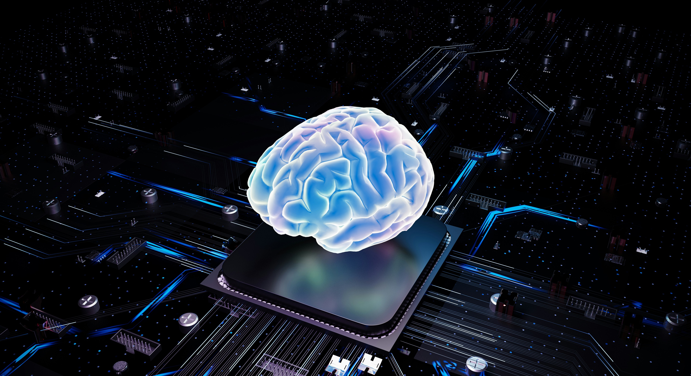

Beyin sinyallerinin dijital çıktılara dönüştürüldüğü etkileşim protokolü
Brain-Computer Interface (BCI), beyin ile cihazlar arasında doğrudan iletişim kuran bir teknolojidir. EEG, ECoG veya implantlar aracılığıyla toplanan sinir sinyalleri yorumlanarak bilgisayar, protez ya da çeşitli donanımların kontrolünde kullanılır.
Tıbbi uygulamalardan oyun ve eğitime, askeri sistemlerden nörorehabilitasyona kadar pek çok alanda araştırmalar hız kazanmaktadır. Bu teknoloji, özellikle ALS ve felç gibi motor nöron hastalıklarına sahip bireyler için devrim niteliğinde sonuçlar doğurabilir.
Beyne doğrudan implant yerleştirilen yöntem. Neuralink bu alanda öncü çalışmalar yürütmektedir.
EEG başlığı gibi dışarıdan takılan sensörlerle çalışan, daha erişilebilir ve risksiz yöntemler.
Kafatası içi ancak beyin yüzeyine dokunmayan elektrotlar kullanılır (ECoG).
Beyin-Bilgisayar Arayüzleri (BCI), teknoloji ile insan zihni arasındaki sınırı aşan çok disiplinli bir alan. Hedefim; sadece düşünce gücüyle fiziksel engelleri aşacak yenilikçi sistemler inşa etmek değil, nörofeedback mekanizmaları yardımıyla bireylerin karşılaştığı sorunlara erişilebilir çözümler üretmek.
Bu alanı daha iyi anlamak için sağdaki videoya göz atabilir veya çalışmalarımda kullandığım ve ilham aldığım platformları aşağıdaki bağlantılardan inceleyebilirsiniz.
Aşağıdaki makaleler, PubMed üzerinden gerçek zamanlı olarak çekilmektedir. PubMed, biyotıp ve yaşam bilimleri alanında dünya çapındaki hakemli akademik literatürü tarayan kapsamlı bir veri tabanıdır.
Makaleler yükleniyor...